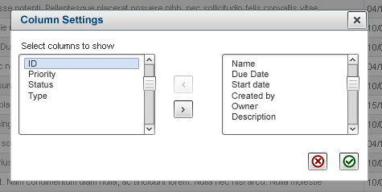
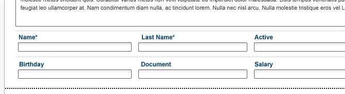

agenda 16aug2011 tuesday
- zzz

An annoying feature of these controls is the need to scroll. Usually there are not that many columns, but one has to scroll the lists anyway because the control is rendered rether small.
The first thing to do is to leverage the screen height, allowing more vertical space for the columns. This will reduce a lot the need for scroll.
Another feature that is really helpful is a text filter. It's a text box below the lists. As the user enters text into it, the lists only depict the items containing that text. Users that do not know exactly the name of the column they want, can try a few words or partial words to shorten the lists and be able to read them carefully in full.

Avoid setting more than one item per line, except when they are colsely related as in the case of first name and last name, because this can lead to missing data when the user prematurely moves to the next line. Also, setting the input controls this way conveys a false matrix sense. Moreover, design like thus where all the fields are the same size and look the same has that same problem: as all look the same it's easy for the user to mix data, and it's hard to keep track of what's done and what not.
Another issue is that if there were optional fields, or if the user was able to create their own fields, a layout like this would mean rendering the added fields differently than the out of the box fields.
The most versatile layout, and the most readable, is the two column layout with the labels at the left of the correspponding input fields. This layout is good for accesibility too.
One extra feature is that it allows for contextual help, like in the example below (click the help icon):
Displaying the labels in bold, colored, characters drives the attention to them. However, the users attention should be more focused in the data than in the labels. It happens that, after using a form for a while, the user doesn't need to read the labels especially, they already know what goes where.
On the contrary, input contents are to be highlighted. For example, when the user is reviewing carefully a form before submitting it, or looking for a value. This is eased by highlighting the inputs and rendering dimmer supporting artifacts (like labels and borders).
The form below is built with dimmed labels and frames, and highlighted input:
Notice how the entered names are easily findable and readable, as compared to the prior example. All artifacts but the input text are grayed, the input text is rendered in a slightly bigger black font, and separated from the input cell left border.
Another feature of this example is how the input control size conveys information about the length of the information tha application is expecting. This is a helpful feature. An extra benefit is that it breaks the regularity that makes all the fields look the same and helps the user to recall the place where they were working in long forms.
This example also highlights the currently focused input element, as an extra aid for the user. In this sample the highlighting is a subtle background color change.
{kind=link}
{kind=link}